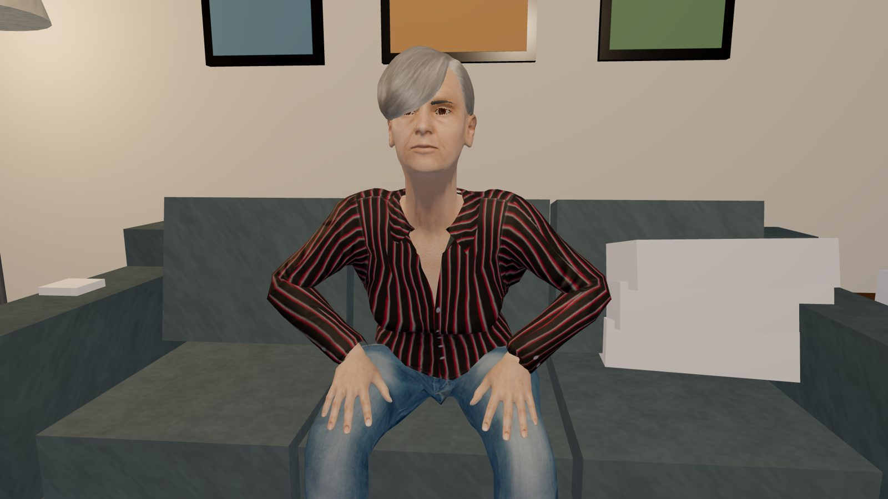
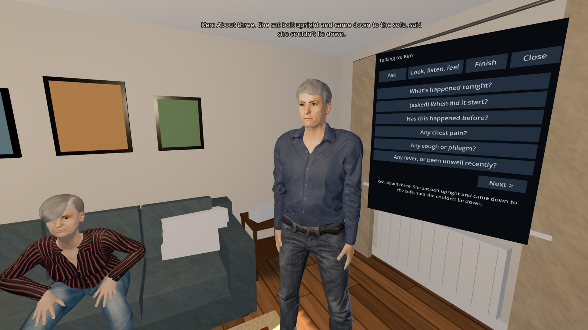
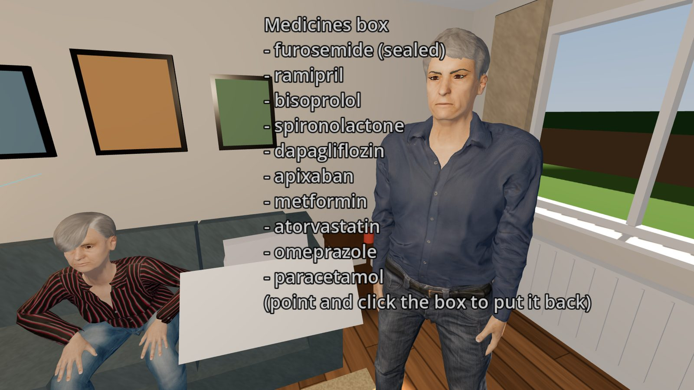
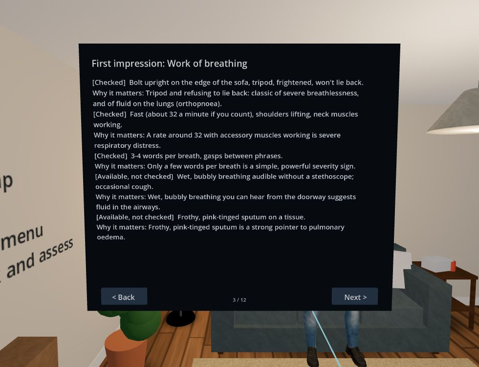
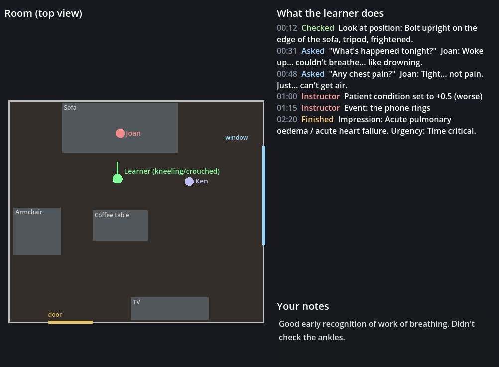

PATIENTS
Look, listen, feel
Patients who look and sound unwell: posture, work of breathing and breath sounds built from the physiology, louder as you get closer.
Walk into a real home, assess a real-looking patient, hear the patient and family answer in their own voices, and get a debrief that explains what was there to find. Standalone on Meta Quest 3, no internet needed. Written by a paramedic.
Most pre-hospital assessment happens in people's homes, with family, clutter and distractions. The simulator puts you there, as often as you like, with consistent scenarios and feedback.

Patients who look and sound unwell: posture, work of breathing and breath sounds built from the physiology, louder as you get closer.

Ask the patient or their family and hear them answer out loud, each in their own voice. A breathless patient speaks in short phrases, stopping to catch their breath. What you ask opens up what you can ask next.

Clues in the home, like the medicines box, the pillows, and a family member who knows more than the patient can say.
Each scenario follows the shape of a real job, from the front door to the debrief.
Walk in and form a first impression: how the patient looks, how they're breathing, who else is in the room.
Kneel to the patient, look, listen and feel, and take a history from the patient and family.
Say out loud what you think is going on and why, then choose your impression.
See what was there to find, what you found, and why each finding matters. Then run it again.

Form your impression, then see what was available in the scenario and what you checked, with why each finding matters.
It reports rather than scores. Expectations differ between services and courses, so the debrief explains the clinical picture and leaves the judgement to you and your educators. Referenced to JRCALC and NICE guidance.
An instructor app on a laptop connects to the headset over a phone hotspot or local Wi-Fi. No internet, no accounts, no infrastructure.

Every scenario is written by a paramedic. Patient responses are fixed in advance: nothing is made up on the fly.
The debrief shows what was there to find and why it matters.
Standalone headset, fully offline. No patient data, no accounts, no Wi-Fi needed.
Comfort settings for people new to VR, seated play, and kneeling to the patient's level.
Practise forming a first impression in a realistic setting, as often as you like.
Repeatable scenarios with a live instructor view, ready for teaching sessions.
CPD that fits around shifts, on a headset that needs no IT setup.
The simulator is in active development, with one scenario working and more on the way. If you're an educator, a service or a clinician interested in trying it or helping shape it, get in touch.